Start here · เริ่มอ่านที่นี่
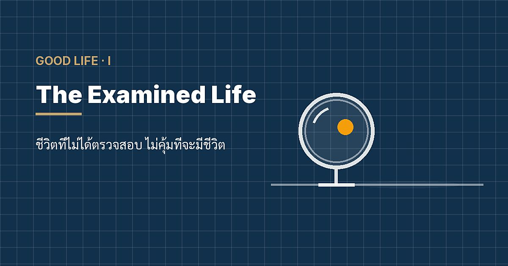
New series · ซีรีส์ใหม่ · 9 Sep 2026 · Wisdom for a Good Life · Essay 1 of 20
The Examined Life — ชีวิตที่ไม่ได้ตรวจสอบ ไม่คุ้มที่จะมีชีวิต
โสกราตีสกล่าวประโยคนี้ตอนถูกตัดสินประหาร — ความเรียงว่าด้วยการรู้จักตนเองที่ไม่ใช่การครุ่นคิดถึงตัวเอง พร้อมงานวิจัยที่แยกการใคร่ครวญออกจากการฟุ้งซ่าน
Read อ่านต่อ →Choose a series · เลือกซีรีส์
Wisdom for a Good Life
Twenty essays on living well, each grown from two or three famous quotes — traced to their real sources, weighed against the research, and turned into one practice for the week. ยี่สิบความเรียงว่าด้วยการใช้ชีวิตให้ดี แต่ละตอนงอกจากคำคมดัง 2–3 ประโยค — ไล่หาต้นทางจริง ชั่งกับงานวิจัย และเปลี่ยนเป็นข้อปฏิบัติหนึ่งข้อของสัปดาห์
Self · รู้จักตน
01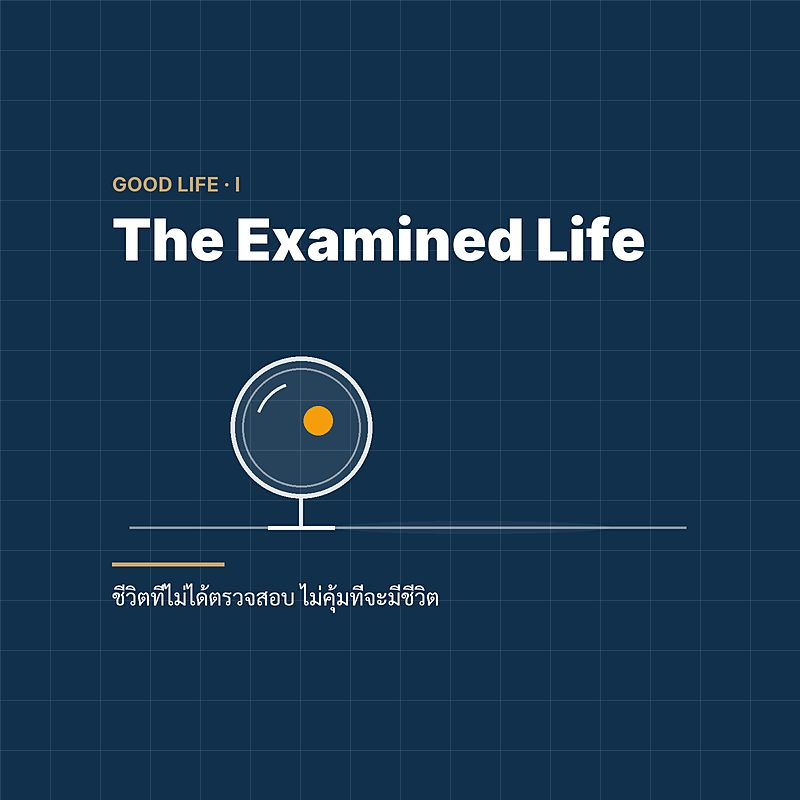
The Examined Life — ชีวิตที่ไม่ได้ตรวจสอบ ไม่คุ้มที่จะมีชีวิต
โสกราตีสกล่าวประโยคนี้ตอนถูกตัดสินประหาร — ความเรียงว่าด้วยการรู้จักตนเองที่ไม่ใช่การครุ่นคิดถึงตัวเอง พร้อมงานวิจัยที่แยกการใคร่ครวญออกจากการฟุ้งซ่าน
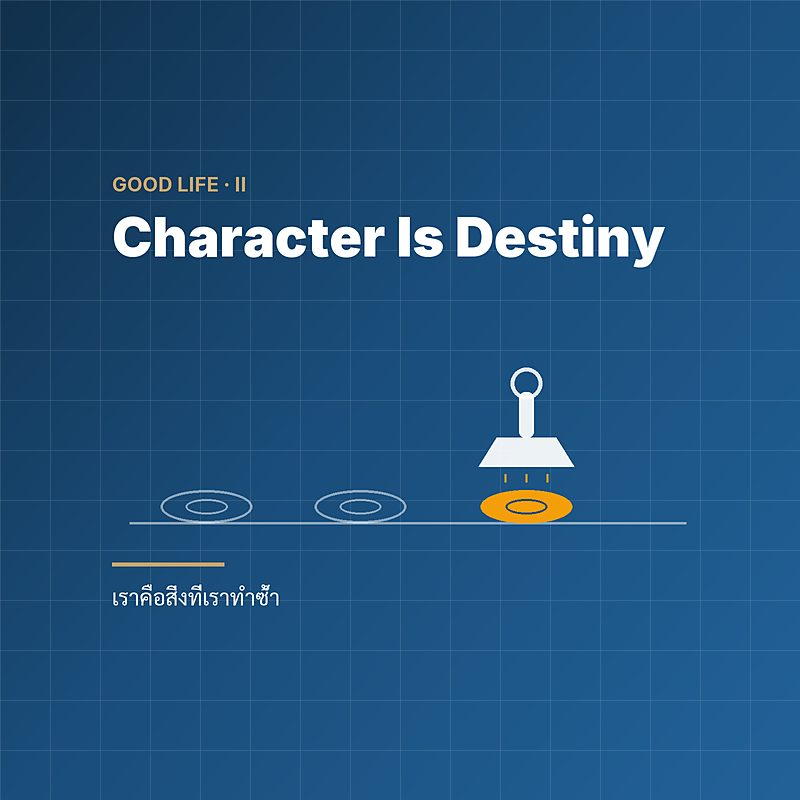
Character Is Destiny — เราคือสิ่งที่เราทำซ้ำ
อุปนิสัยงอกจากสิ่งที่เราทำซ้ำ มากกว่าจากสิ่งที่เรามี — จากเฮราคลิตุสถึงอริสโตเติล ตารางคุณธรรมของแฟรงคลิน และคำถามจากงานวิจัยว่าสถานการณ์กำหนดเรามากแค่ไหน
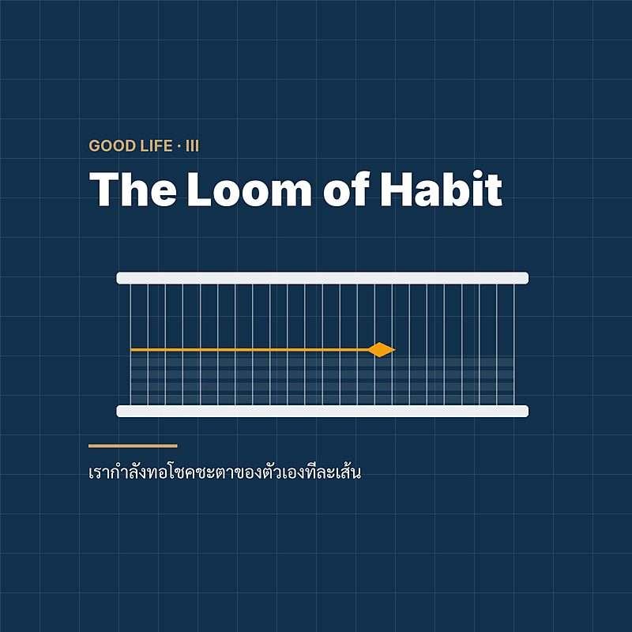
The Loom of Habit — เรากำลังทอโชคชะตาของตัวเองทีละเส้น
นิสัยเติบโตด้วยการกระทำที่ตรงกับนิสัยนั้น — เอพิคเททัส วิลเลียม เจมส์ และขงจื๊อว่าด้วยวินัยในตน พร้อมงานวิจัยว่านิสัยใช้เวลาเฉลี่ย 66 วัน ห่างไกลจาก 21 วัน
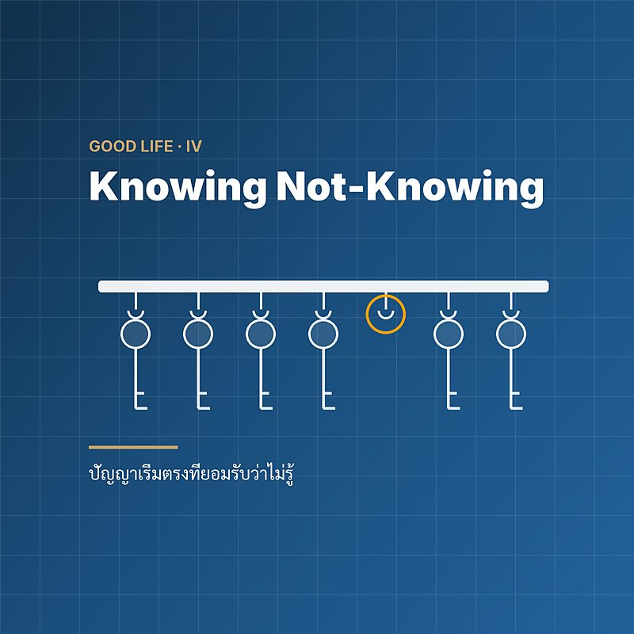
To Know That You Do Not Know — ปัญญาเริ่มตรงที่ยอมรับว่าไม่รู้
ความถ่อมตนทางปัญญาเป็นทักษะฝึกได้ มากกว่าท่าที — ขงจื๊อ โสกราตีส และมาร์คุส เอาเรลิอุส พร้อมงาน Dunning–Kruger และข้อวิจารณ์ว่ากราฟดังบางส่วนเป็นภาพลวงสถิติ
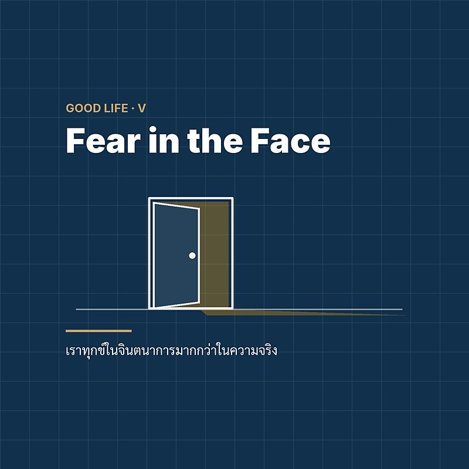
Fear in the Face — เราทุกข์ในจินตนาการมากกว่าในความจริง
ความกล้าหาญคือการเอาชนะความกลัวทั้งที่ยังกลัวอยู่ — เซเนกา เอลีนอร์ โรสเวลต์ และเนลสัน แมนเดลา พร้อมงานวิจัยว่าเราทำนายความรู้สึกแย่ของตัวเองเกินจริงอยู่เสมอ
Mind · รู้จักใจ
06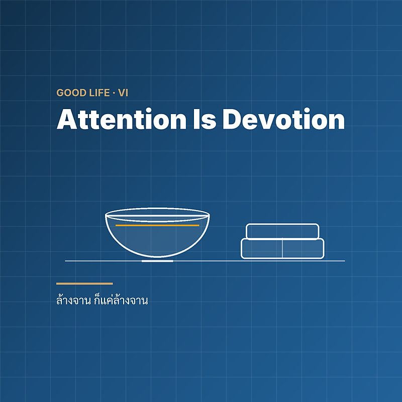
Attention Is Devotion — ล้างจาน ก็แค่ล้างจาน
ใจที่เตร็ดเตร่คือใจที่ไม่มีความสุข งานวิจัยว่าไว้ — ความเรียงว่าด้วยความใส่ใจจากแมรี โอลิเวอร์ ติช นัท ฮันห์ และพุทธทาสภิกขุ พร้อมข้อจำกัดจริงของโปรแกรมสติ
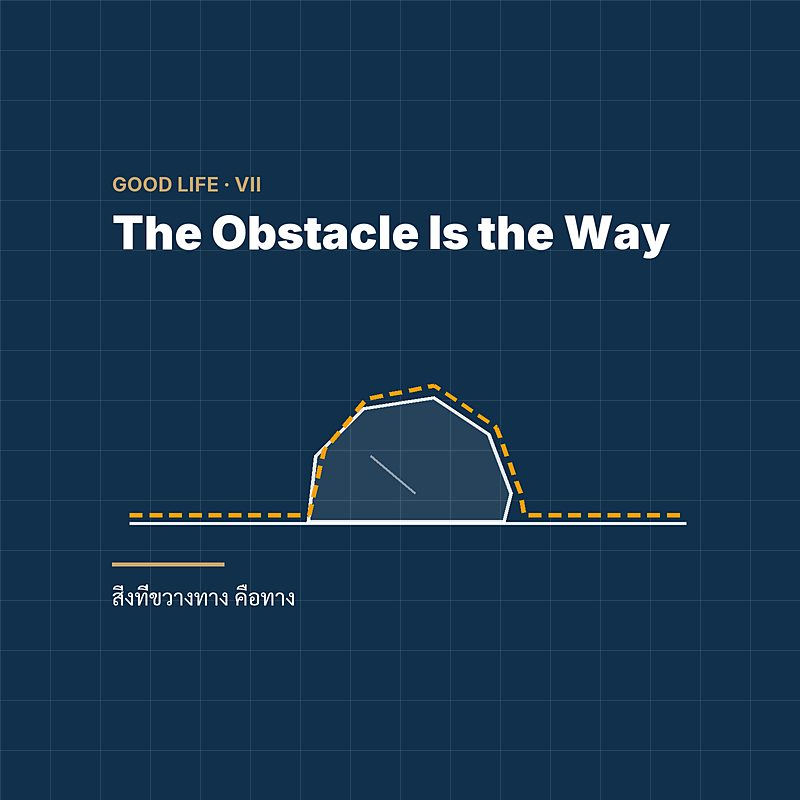
The Obstacle Is the Way — สิ่งที่ขวางทาง คือทาง
ความยืดหยุ่นทางใจคือผลลัพธ์ที่พบบ่อยที่สุดหลังความสูญเสีย — มาร์คุส เอาเรลิอุส วิกเตอร์ แฟรงเคิล และนีทเช่ พร้อมคำเตือนว่าการเติบโตหลังบาดแผลวัดยากกว่าที่คิด
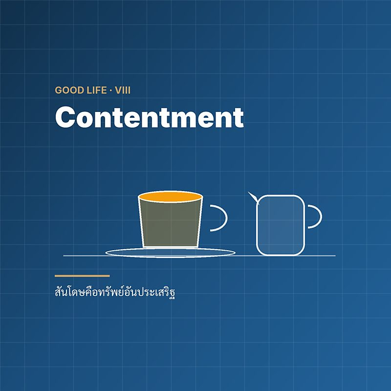
Contentment, the Greatest Wealth — สันโดษคือทรัพย์อันประเสริฐ
สันโดษคือการเลิกไล่ตาม ต่างจากการยอมแพ้ — ธรรมบท เอพิคูรัส และเล่าจื๊อ พร้อมเรื่องจริงของผู้ใหญ่วิบูลย์ เข็มเฉลิม และงานวิจัยว่าด้วยการปรับตัวเข้าหาความสุข
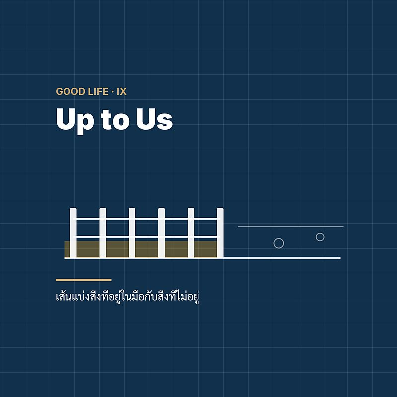
Some Things Are Up to Us — เส้นแบ่งสิ่งที่อยู่ในมือกับสิ่งที่ไม่อยู่
ทุกข์ส่วนใหญ่มาจากการดิ้นรนกับสิ่งที่ไม่อยู่ในมือ — เอพิคเททัส มาร์คุส เอาเรลิอุส และคำอธิษฐานเพื่อความสงบ พร้อมเรื่องจริงของสต็อกเดลในคุกฮานอย
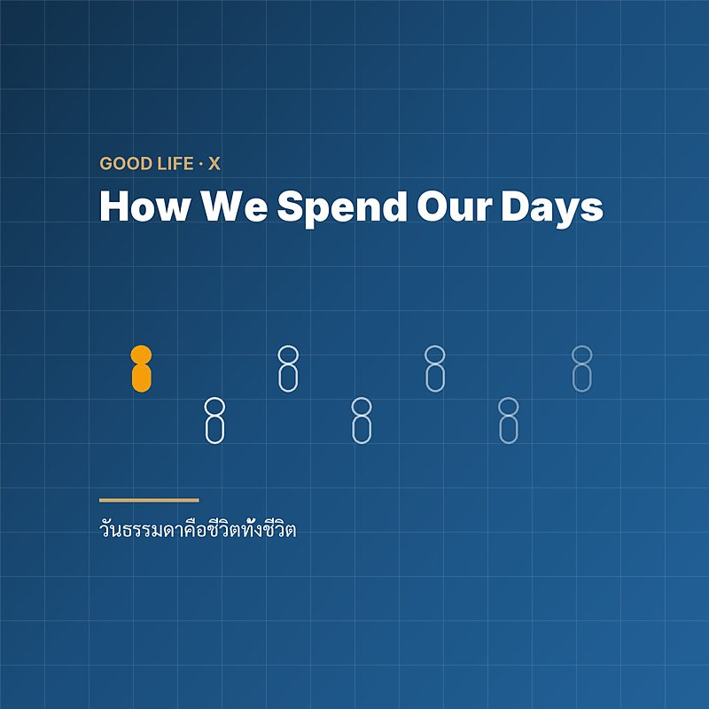
How We Spend Our Days — วันธรรมดาคือชีวิตทั้งชีวิต
ชีวิตไม่ได้สั้น เราเองที่ปล่อยให้ผ่านไปเปล่าเสียมาก — เซเนกา แอนนี ดิลลาร์ด และเล่าจื๊อ พร้อมกิจวัตรของดาร์วิน และงานวิจัยที่ทบทวนการทดสอบมาร์ชแมลโลว์ใหม่
Work · การงาน
11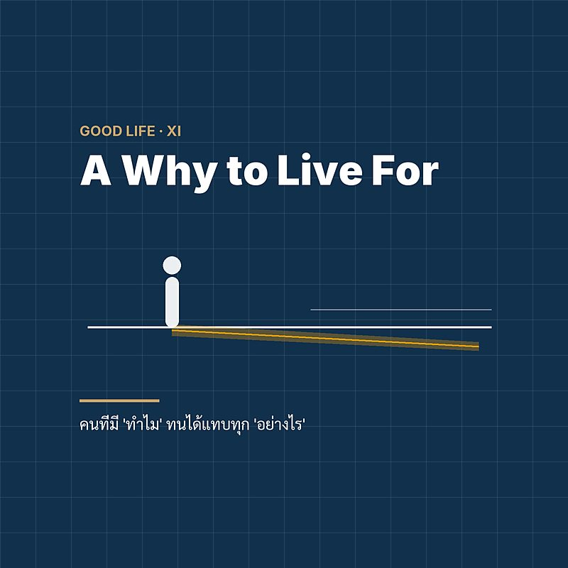
A Why to Live For — คนที่มี 'ทำไม' ทนได้แทบทุก 'อย่างไร'
จุดหมายเป็นคำตอบที่เราเลือกใหม่ทุกเช้า มากกว่าของที่รอให้ค้นพบ — นีทเช่ ริลเคอ และมาร์คุส เอาเรลิอุส พร้อมงานวิจัยเรื่อง calling และที่มาจริงของแผนภาพอิคิไก
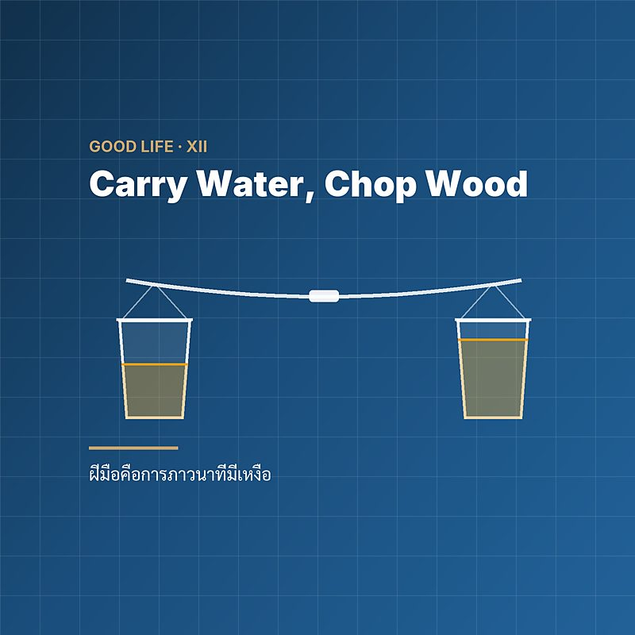
Carry Water, Chop Wood — ฝีมือคือการภาวนาที่มีเหงื่อ
ความเชี่ยวชาญซ่อนอยู่ในการตักน้ำแบกฟืนของทุกวัน มากกว่าบนเวที — ฆราวาสผาง ปัญญาจารย์ และมิยาโมโตะ มุซาชิ พร้อมเรื่องของจิโร่ และเพดานจริงของการฝึกฝนอย่างตั้งใจ
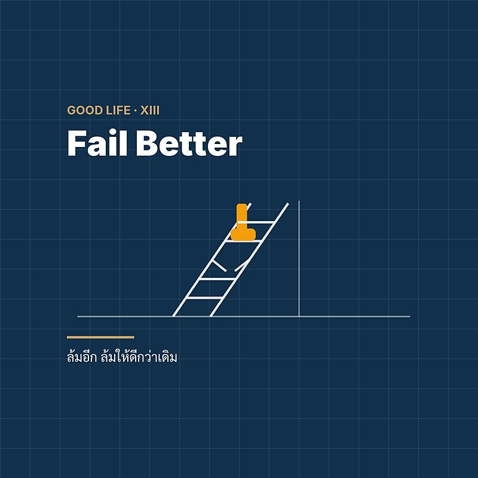
Fail Better — ล้มอีก ล้มให้ดีกว่าเดิม
ความเพียรอยู่ที่การล้มครั้งใหม่ให้ดีกว่าครั้งก่อน — เบ็คเก็ตต์ เอดิสัน และขงจื๊อ พร้อมงานวิจัยเรื่อง grit ที่ผลเล็กกว่าที่โฆษณา และการแก้ทฤษฎีของเซลิกแมนเอง
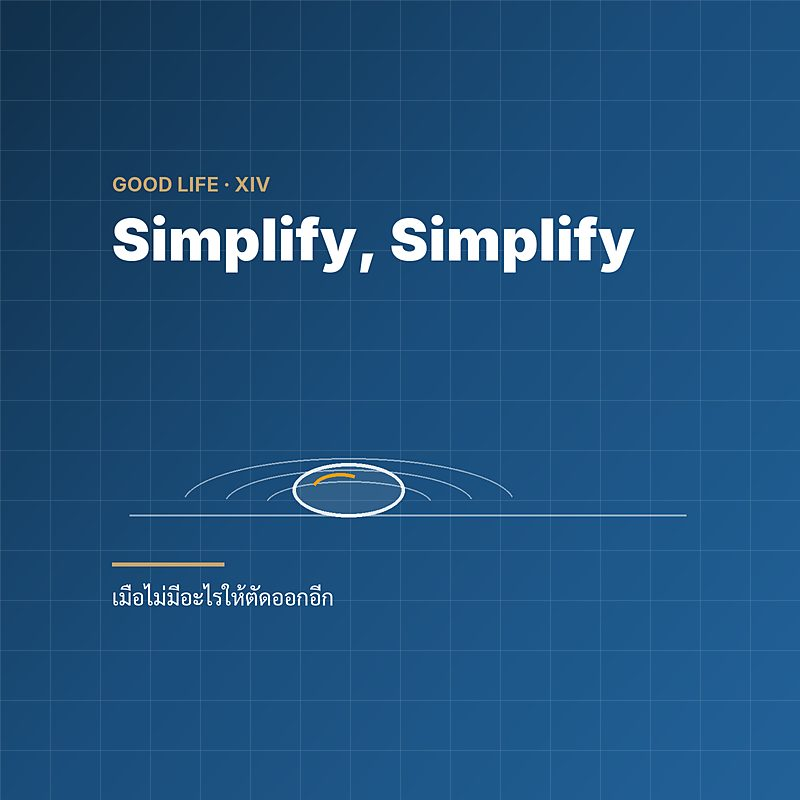
Simplify, Simplify — เมื่อไม่มีอะไรให้ตัดออกอีก
ความเรียบง่ายคือการเหลือไว้แต่สิ่งที่ตัดออกไม่ได้อีกแล้ว มากกว่าการมีให้น้อย — ธอโร เซเนกา และแซงเตกซูเปรี พร้อมงานวิจัยเรื่องต้นทุนการสลับงานและเศษความสนใจ
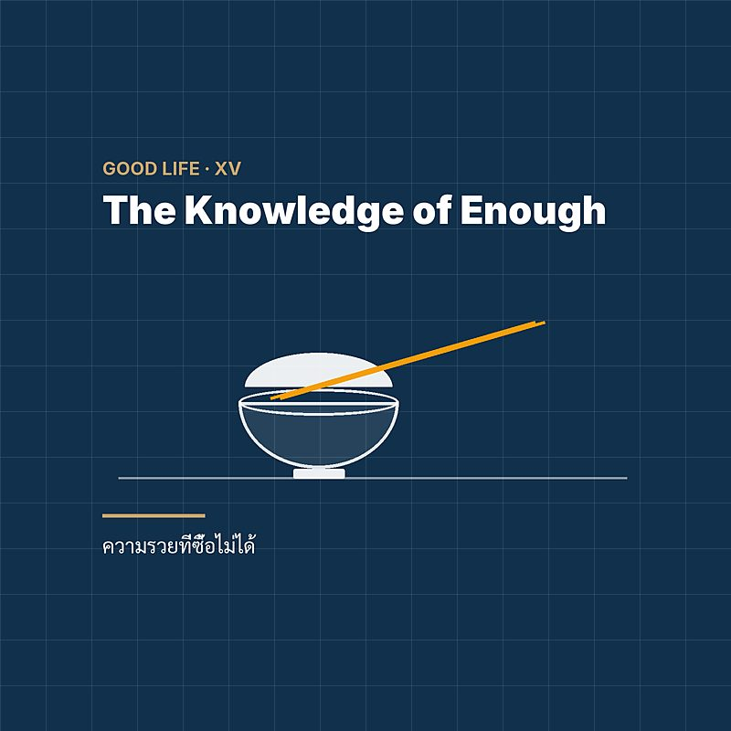
The Knowledge of Enough — ความรวยที่ซื้อไม่ได้
คำว่าพอคือทรัพย์ที่ซื้อไม่ได้ — เอพิคูรัส บทกวีของวอนเนกัตเรื่องเฮลเลอร์ และขงจื๊อ พร้อมเรื่องเงินกับความสุขที่คาห์เนมันกับคิลลิงส์เวิร์ธไขร่วมกันในปี 2023
Others · ผู้อื่น
16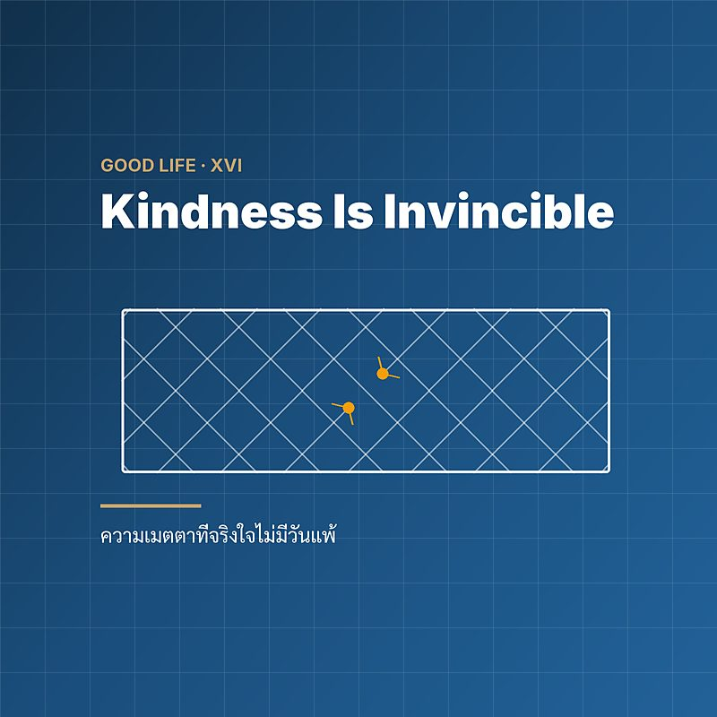
Kindness Is Invincible — ความเมตตาที่จริงใจไม่มีวันแพ้
ความเมตตาที่จริงใจเป็นกำลังชนิดที่ไม่มีวันแพ้ หาใช่ความอ่อนแอไม่ — ขงจื๊อ มาร์คุส เอาเรลิอุส และนิทานอีสป พร้อมงานวิจัยเรื่องการให้ที่ผลจริงเล็กกว่าพาดหัวข่าว
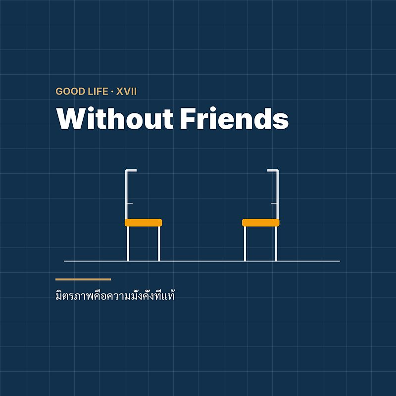
Without Friends No One Would Choose to Live — มิตรภาพคือความมั่งคั่งที่แท้
มิตรภาพคือความมั่งคั่งที่งานวิจัย 85 ปีของฮาร์วาร์ดยืนยัน — อริสโตเติล ซิเซโร และเอเมอร์สัน พร้อมเรื่องมงแตญกับลาโบเอตี และงานวิจัยว่าความสัมพันธ์กำหนดอายุขัย
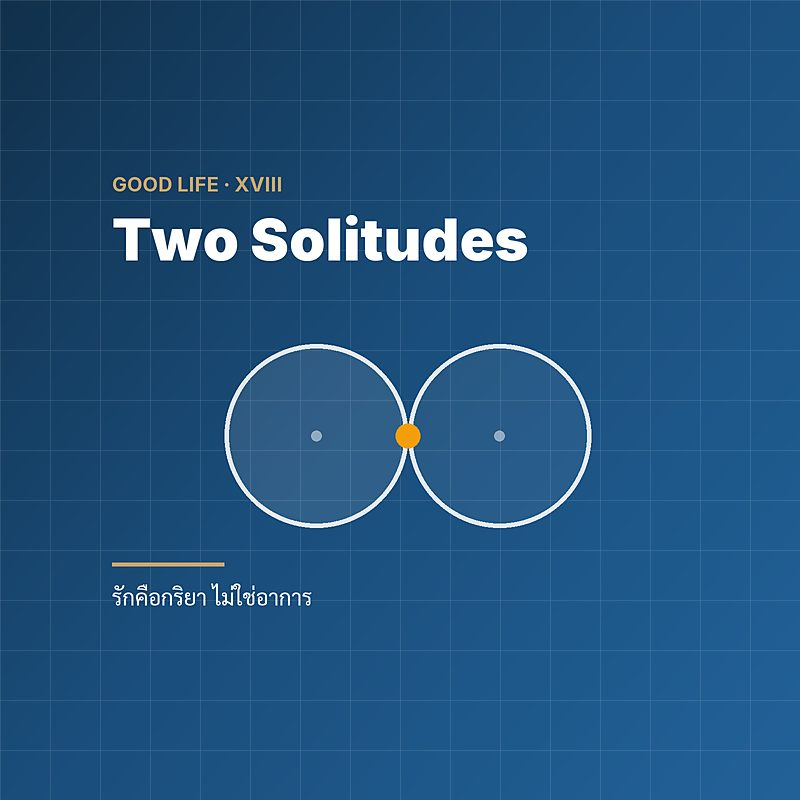
Two Solitudes — รักคือกริยา ไม่ใช่อาการ
รักเป็นสิ่งที่ต้องลงมือและฝึกฝน มากกว่าอาการที่เกิดเอง — ริลเคอ อีริช ฟรอมม์ และเบลล์ ฮุกส์ พร้อมงานวิจัยของก็อตต์แมนที่ควรอ่านอย่างระวัง และทฤษฎีความผูกพัน
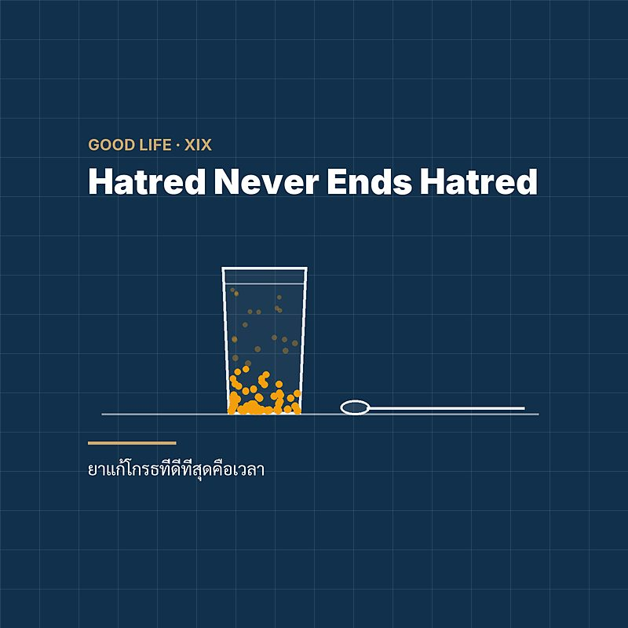
Hatred Never Ends Hatred — ยาแก้โกรธที่ดีที่สุดคือเวลา
เวรย่อมไม่ระงับด้วยเวร — ธรรมบท ฮอเรซ และเซเนกาว่าด้วยความโกรธและการให้อภัย พร้อมงานวิจัยว่าการระบายไม่ได้ช่วย และเรื่องจริงของแมนเดลากับเสื้อสปริงบ็อก
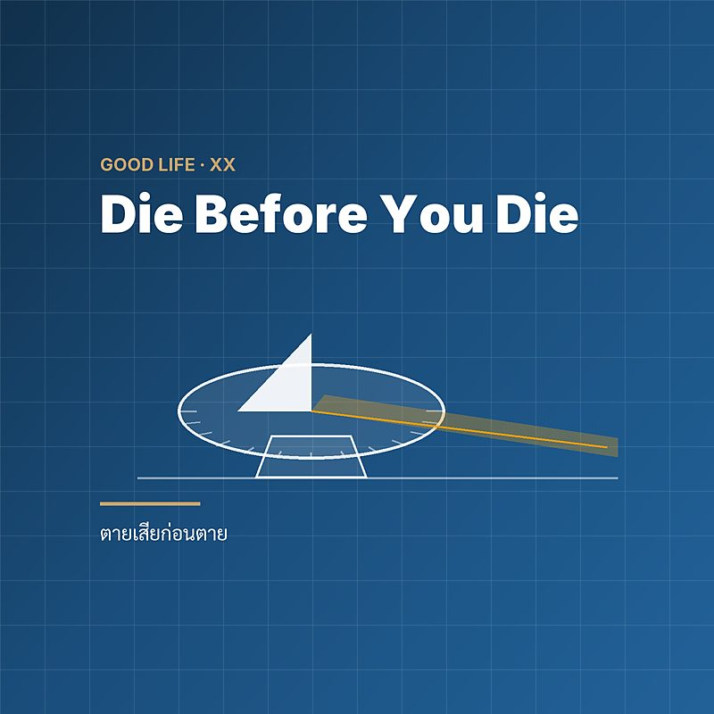
Die Before You Die — ตายเสียก่อนตาย
การระลึกถึงความตายเป็นเครื่องมือตัดสินใจ มากกว่าเรื่องหดหู่ — มาร์คุส เอาเรลิอุส สตีฟ จ็อบส์ และพุทธทาสภิกขุ พร้อมงานวิจัยที่แยกข้อค้นพบจริงจากเรื่องเล่าขายดี
Working Philosophies
One working week in ten essays for anyone in a hard job — where you stand, how to think through heavy work, how to stay stuck without becoming stuck, a compass set before the storm, and how to leave well. หนึ่งสัปดาห์ทำงานในสิบบทความ สำหรับคนที่งานกำลังยาก — รู้ว่ายืนอยู่ตรงไหน คิดอย่างไรเมื่องานหนัก ติดอยู่โดยไม่กลายเป็นคนติด ตั้งเข็มทิศไว้ก่อนพายุ และจากไปอย่างงาม
Monday · วันจันทร์
01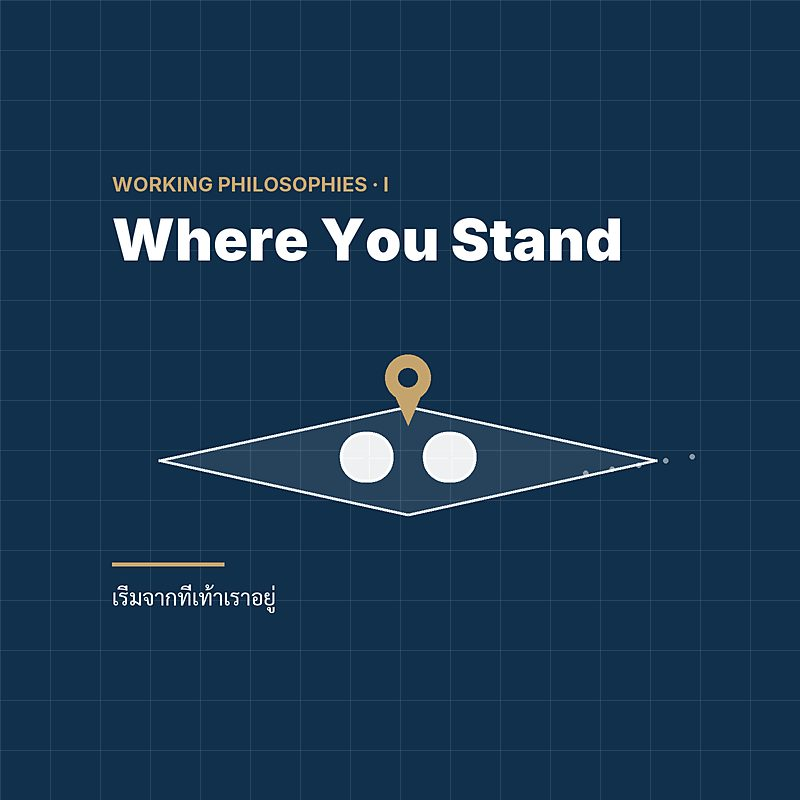
Where You Stand — ยืนตรงไหน เริ่มจากที่เท้าเราอยู่
บทแรกของสัปดาห์ทำงาน — วิธีแยกวันแย่ ฤดูแย่ และที่แย่ออกจากกัน สมุดสามช่อง งาน คน ตัวเรา และเหตุผลที่ต้องเริ่มจากจุดที่เท้าเราอยู่จริง ไม่ใช่จุดที่อยากอยู่
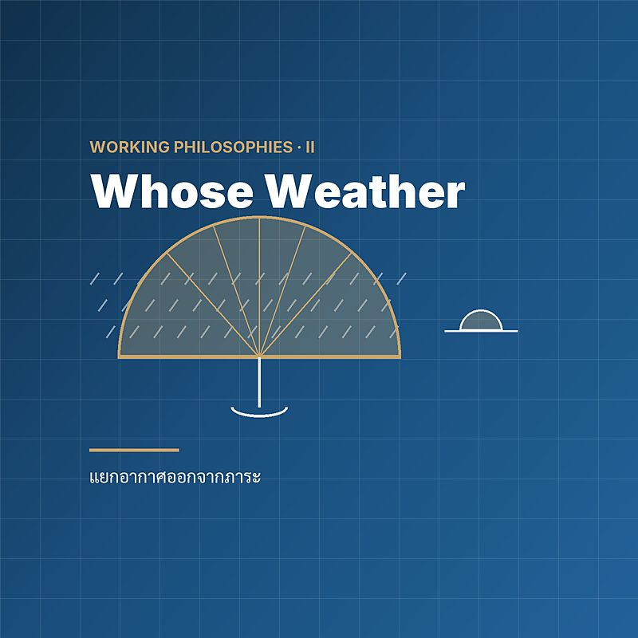
Whose Weather — ฟ้าของใคร แยกอากาศออกจากภาระ
ฝนตกทั้งตึกไม่ใช่ความผิดของเรา — วิธีแยกอากาศขององค์กรออกจากภาระที่เป็นของเราจริง วงกลมรอบโต๊ะทำงาน และรายการสิ่งที่ขยับได้ภายในสัปดาห์นี้
Tuesday · วันอังคาร
03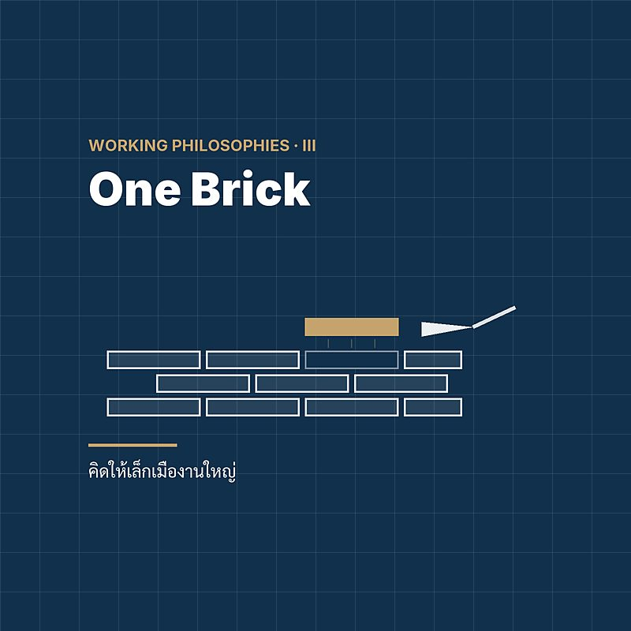
One Brick — อิฐหนึ่งก้อน คิดให้เล็กเมื่องานใหญ่
งานใหญ่ทำให้ล้มเพราะเรามองเห็นมันทั้งก้อน — วิธีลดงานเหลืออิฐก้อนถัดไป แยกลูปของงานออกจากลูปของความคิด และสมุดรายการที่ทำเสร็จแล้วที่ช่วยได้จริง
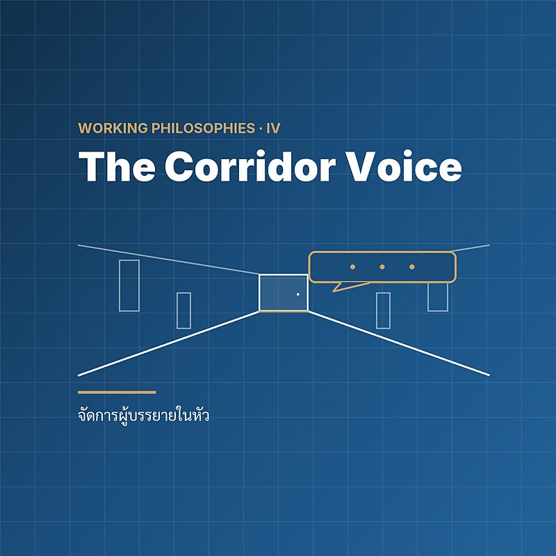
The Voice in the Corridor — เสียงในโถงทางเดิน จัดการผู้บรรยายในหัว
เสียงที่เล่าเรื่องที่ทำงานซ้ำตอนตีสามไม่ใช่ความคิด แต่คือความกังวลที่แต่งตัวเป็นความคิด — วิธีแยกสองอย่าง นัดเวลาให้ความกังวล และคำถาม นี่คือความคิดหรือคืองาน
Wednesday · วันพุธ
05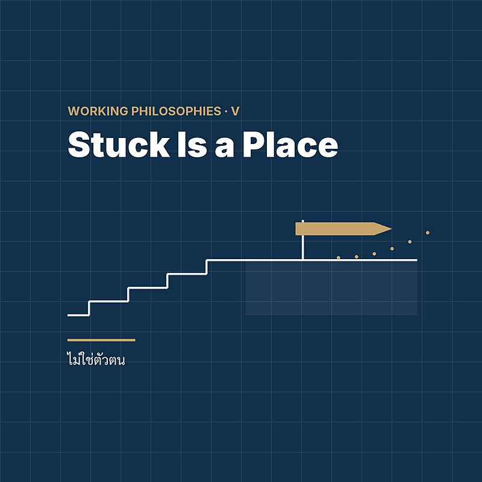
Stuck Is a Place — ติดอยู่คือสถานที่ ไม่ใช่ตัวตน
การติดอยู่คือที่ที่เรายืน ไม่ใช่สิ่งที่เราเป็น — วิธีแยก «ติด» ออกจาก «ช้า» การทดลองเก้าสิบวันที่วัดผลได้ และคำติที่น่าเบื่อที่ต้องเดินไปขอเอง
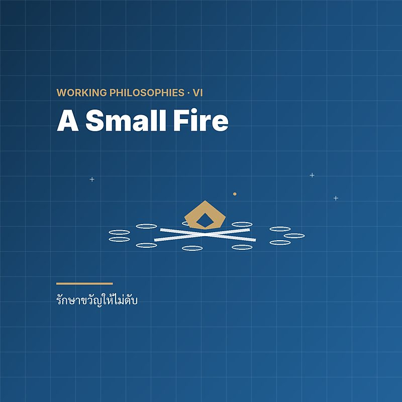
A Small Fire — ไฟกองเล็ก รักษาขวัญให้ไม่ดับ
ขวัญกำลังใจไม่ใช่กองไฟใหญ่ที่ต้องปลุกทุกเช้า แต่คือไฟกองเล็กที่ต้องเลี้ยงไว้ — สามสิ่งที่ไปได้ดี คนหนึ่งคนที่ต้องมี และเย็นวันหนึ่งในสัปดาห์ที่ต้องปกป้องให้ได้
Thursday · วันพฤหัสบดี
07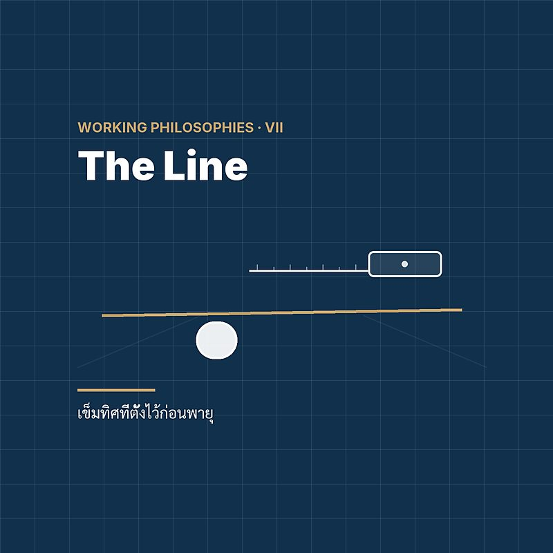
The Line You Do Not Cross — เส้นที่ไม่ข้าม เข็มทิศที่ตั้งไว้ก่อนพายุ
เข็มทิศศีลธรรมตั้งกันในวันฟ้าโปร่ง ไม่ใช่กลางพายุ — เขียนเส้นสามเส้นลงกระดาษล่วงหน้า ระวังการประนีประนอมเล็ก ๆ ที่ทบต้น และวิธีปฏิเสธโดยไม่ต้องกล่าวสุนทรพจน์
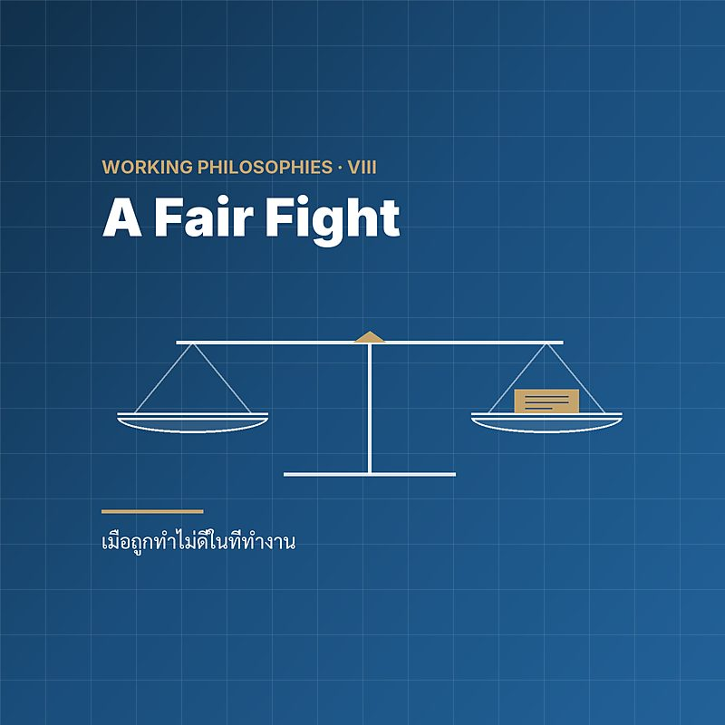
A Fair Fight — สู้อย่างเป็นธรรม เมื่อถูกทำไม่ดีในที่ทำงาน
เมื่อถูกทำไม่ดีในที่ทำงาน — วิธีสู้แบบที่ไม่กลายเป็นสิ่งที่เราสู้ด้วย บันทึกสองช่องข้อเท็จจริงกับข้อขอ การส่งเรื่องขึ้นไปให้ถูกทาง และการรักษาชื่อให้สะอาด
Friday · วันศุกร์
09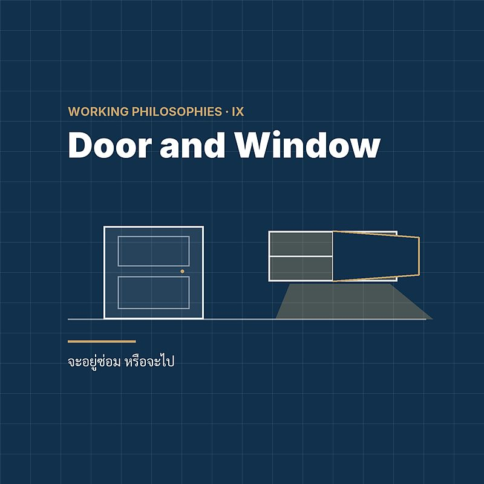
The Door and the Window — ประตูกับหน้าต่าง จะอยู่ซ่อม หรือจะไป
การออกจากที่แย่คือการตัดสินใจ ไม่ใช่การหนี — สัญญาณที่บอกว่าถึงเวลา รันเวย์สามอย่าง เงิน ทักษะ ผู้คน บัญชีทางออก และวิธีจากไปโดยไม่เผาสะพานที่เดินข้ามมา
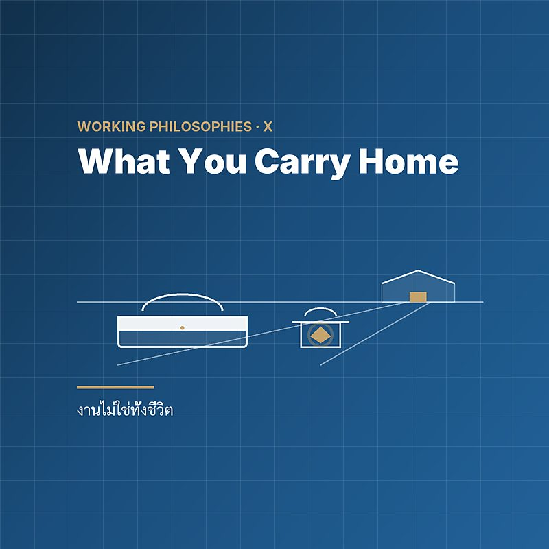
What You Carry Home — สิ่งที่พกกลับบ้าน งานไม่ใช่ทั้งชีวิต
บทปิดสัปดาห์ — อะไรที่ตามเรากลับบ้านได้ อะไรควรวางไว้ที่โต๊ะ ฝีมือที่เก็บไว้ ผู้คนที่ยังอยู่ ชื่อที่ยังสะอาด และสิ่งที่อาชีพหนึ่งรวมกันแล้วได้เป็นอะไร


The book these essays grow from · หนังสือต้นทาง
One Day of Light แสงของวันหนึ่ง
A last lecture told as one day — twenty-one short chapters in three parts, free to read in English and Thai. The nine essays below walk the same arc, one part of the day at a time. ปัจฉิมกถาที่เล่าเป็นหนึ่งวัน — ยี่สิบเอ็ดบทสั้นในสามภาค อ่านฟรีทั้งฉบับไทยและอังกฤษ ความเรียงเก้าบทข้างล่างเดินตามโครงเดียวกัน ทีละช่วงของวัน
Life Thought & Philosophy
Read them in order — about an hour end to end. The first eight set something up that the finale quietly turns over. อ่านตามลำดับ — ราวหนึ่งชั่วโมงจบทั้งวัน แปดบทแรกวางบางสิ่งไว้ ที่บทสุดท้ายค่อยพลิกให้เห็น
Morning · เช้า
01
Waking — ตื่น สิ่งที่เราไม่ได้เลือก
นาทีแรกของวันเต็มไปด้วยของที่เราไม่ได้เลือก — ว่าด้วยความกตัญญู แสงที่ยืมมา และเหตุผลที่ไม่มีใครสร้างตัวเองได้จริง

Working — ลงมือ ชั่วโมงที่ต้องลงชื่อ
เวลาเป็นทรัพย์สินแท้จริงชิ้นเดียวของเรา — ตรงต่อเวลา ลงชื่อกับการตัดสินใจของตัวเอง และลบคำว่า «รู้งี้» ออกจากชีวิต

Toward Noon — เข้าใกล้เที่ยง แล้วเราจะสร้างอะไร
ฟ้าหลังฝนไม่ได้ปฏิเสธว่าฝนเคยตก — การยอมรับโดยไม่ยอมจำนน ความเงียบที่ทำงานหนักกว่าคำพูด และวินาทีที่ยามเช้ากลายเป็นเที่ยง
Noon · เที่ยง
04
First Fire — ไฟกองแรก คำที่ต้องทำได้ และปัญหาที่คู่ควร
เที่ยงวันเริ่มด้วยไฟสองกอง — คำพูดที่เป็นเลขตรวจทานของเรา และปัญหาที่คู่ควรกับหนึ่งปีของชีวิต

High Heat — กลางเปลวแดด ทางที่สาม และพายุที่ซ้อมไว้
ทางแยกที่บอกว่ามีสองทาง มักสำรวจมาไม่จบ — ว่าด้วยทางที่สาม แผนสามฟ้า และงานที่กล้าส่งทั้งที่ยังมีรอยร้าว

The Long Light — แดดเริ่มยาว เสียง «เอ๊ะ» และแสงที่ส่งต่อ
สัญชาตญาณหนึ่งพยางค์ที่ควรได้สิทธิ์หยุดนาฬิกา และเหตุผลที่ความรู้ยิ่งให้ยิ่งเพิ่ม — ระบบทุกระบบถูกแทนที่ แต่คนที่เราสอนยังทำงานอยู่
Twilight · สนธยา
07
True North — ทิศเหนือของใจ เข็มทิศ และคำว่า «พอ»
แผนที่ทุกแผ่นหมดอายุ แต่เข็มทิศที่ไม่เคยอัปเดตกลับใช้ได้เสมอ — ศีลประจำใจห้าข้อ และเลขคณิตของคำว่า พอ

The Open Hand — มือที่คลายออก ถือให้เบาในวันที่ไม่มีอะไรเก็บได้
แก้วที่แตกแล้วของหลวงพ่อชา ตำแหน่งที่ถอดออกเหมือนเสื้อ และความไม่จีรังในฐานะกลไกตั้งราคาของชีวิต

Before Dark — ก่อนมืด ขอบคุณเต็มเสียง และลาอย่างงาม
บทส่งท้าย — คำขอบคุณที่ต้องส่งก่อนที่อยู่จะหมดอายุ การปิดระบบอย่างงาม และกลลวงไม้ตายที่ซีรีส์นี้เฉลยตอนจบ